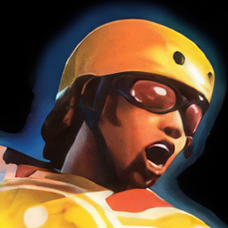

 SSX
Details
 |
|
| Playtime | Not Played |
| Last Activity | Never |
| Added | 4/29/2025 7:31:29 |
| Modified | 4/30/2025 2:42:27 |
| Completion Status | Not Played |
| Library | Playnite |
| Source | |
| Platform | Microsoft Xbox 360 |
| Release Date | 2/28/2012 |
| Community Score | 72 |
| Critic Score | 84 |
| User Score | |
| Genre | Sports |
| Developer | Electronic Arts |
| Publisher | EA SPORTS |
| Feature | Single Player Split Screen |
| Links | Wikipedia Official website MobyGames |
| Tag | |
Description
SSX (standing for "Snowboard Supercross") is a series of snowboarding video games published by EA Sports, created by Steve Rechtschaffner, who is the inventor of the Olympic snowboarding event boardercross. The SSX series are arcade-style racing games with larger-than-life courses, characters, and tricks. The general focus of the series is racing and performing tricks on snowboards. Players earn speed boosts based on tricks they perform. The player generally has to perform tricks in each race in order to gain speed and successfully take the lead. The series introduced skiing with its fourth installment, SSX on Tour (2005).
The original SSX (2000) was a launch title for both the EA Sports Big brand and the original PlayStation 2. The franchise has received high critical acclaim, with the first three installments receiving over 90.00% on GameRankings and Metacritic. The series has won numerous awards and its third installment SSX 3 (2003) sold over a million copies. The most recent game in the franchise is SSX (2012).
Gameplay
Starting with the original SSX, players may choose any one of a number of snowboarders, each with their own statistics and boarding style. A course is selected and the player is given the option of racing down the course or participating in a competition to do tricks. Each course is filled with ramps, rails, and other assorted objects. Performing tricks fills up the player's boost meter, which can then be used for additional acceleration, making tricks important even in a race. Players also have the option of practicing or exploring courses in freeride mode.
SSX Tricky introduced Uber Tricks, absurdly unrealistic and exaggerated tricks, often involving detaching the board from the snowboarder's feet. The player can gain access to Uber Tricks during play after filling the adrenaline bar; performing six Uber Tricks earns the player unlimited boost for the rest of the race. SSX Tricky also introduced a new feature called rivalries, where the player would face consequences from their opponents if they attacked them while on the course, which also fills the player's boost meter.
SSX 3 introduced an open mountain concept. Instead of offering individual races on multiple mountains, SSX 3 takes place on one open mountain with three peaks. The runs are designated as Race, Slopestyle, Super Pipe, Big Air or Backcountry. The game also introduces new “Mountain effects” such as snow spray, snowstorms and natural disasters. SSX 3 also introduces a second, intermediate set of Uber Tricks. Each character has an associated Uber Trick. The unlimited boost system was tweaked to where the player simply had to complete nine Uber Tricks to get the boost bonus but has a time limit, and after that expires, the second tier must be completed again to regain unlimited boost. Certain combinations of spins, flips, and Uber Tricks resulted in Monster Tricks, worth even more points than uber tricks. The points for the combinations are only unlocked after completing certain goals in the game, such as staying on a rail for 120 m (390 ft).
SSX on Tour added more character customization and introduced the sport of skiing into franchise. All Uber Tricks in SSX on Tour are now known as Monster Tricks and are much simpler to execute than the Monster Tricks of SSX 3. Where previous SSX titles used the main trick buttons and the tweak button for later titles to perform Uber Tricks, the Monster Tricks in SSX on Tour are performed by pushing the right analog stick in different directions.
SSX Blur was a Wii exclusive, being one the first games to utilize the full capabilities of the Wiimote and the nunchuck. Blur introduced slalom events and the groove meter, which made the music intensify every time you stuck a trick, as well as increase your speed and height in the air. Uber Tricks this time around are now called Ubers and required the player to draw special shapes in the air with their Wiimotes.
In the final SSX installment, its Uber Tricks can be tweaked with the use of additional button to gets more points. Also as an alternative to getting unlimited boost after completing six Uber Tricks, Super Uber Tricks are allowed to be performed, as opposed to Monster Tricks. Super Uber Tricks are even more intense than regular Uber Tricks; if both trigger buttons are held while performing an Uber Trick, a trick unique to the player's character is performed worth the most points out of every possible trick.
Development
The development of SSX began with series producer Steven Rechtschaffner, who began his career as a professional skier from 1978 to 1981. After retiring from skiing, Rechtschaffner became a program director for his former team, aiming to make freestyle skiing an olympic event. Rechtschaffner abandoned this career in 1983, and became a segment producer for an action sports show called Greg Stump’s World of Extremes for Fox TV. Rechtschaffner said he "ran out of ideas" for segments and came up with the idea to combine motocross with skiing, later deciding snowboarding would be more suitable than skiing. Because of this idea he invented the sport of boardercross, which is an Olympic event today.
Rechtschaffner then spent six years building a brand for a wristwatch company called Swatch, which had a focus at the time to combine hip-hop with action sports, which became later influential in Rechtschaffner's pitch for SSX.
Rechtschaffner became interested in tv and film production at the same time his wife wished to move back to her home of Vancouver, Canada, where Rechtschaffner landed a job as a producer at Electronic Arts Canada in 1991 after presenting his idea to make games more appealing. Rechtschaffner used his experience as a television director to help develop the cameras for EA's then emerging 3D sports titles.
In this time Rechtschaffner created the Triple Play series for EA. Because the series was successful, EA gave Rechtschaffner the blessing to work on his own side project, which began the development of SSX. Rechtschaffner's approach was to "build it at an arcade or Nintendo-level quality, and really making it about fun, not about being a simulation. But having great physics and control, things that anybody could pick up and play but it would be hard to really master the game."
In 1999, EA revealed SSX was being developed for the Sega Dreamcast, however EA's relationship with Sega was severed after disagreements over the choice of CPU Sega designated for the Dreamcast, as well as a new licensing deal that meant less money going to EA for games sold.
EA presented SSX to Sony who responded enthusiastically, offering the team help as well as access to their engineers if the team promised to make it a launch title for their upcoming Playstation 2 console. Despite Sony's proposal, some at EA were still uncertain of the project, but Rechtschaffner was allowed to continue due to a "silver bullet" concept at EA, which according to Rechtschaffner was "an opportunity to try something, even if you were to fail, as long as you were building on top of a success." Rechtschaffner's Triple Play series was his earned silver bullet.
SSX appeared to be shaping up to a higher quality than that seen of the normal EA Sports games of the time, which Rechtschaffner said averaged "about 74" with game ratings at the time. Inspired by this early reception alongside his background in marketing and branding with Swatch, Rechtschaffner proposed a new label within EA Sports called EA Sports Big for similar, more experimental titles, and pulled this branding together weeks before the launch of the first SSX.
SSX was released as a launch title for the Playstation 2 on October 26, 2000 and received a 93 on Metacritic, making it one of the highest rated games in EA's history and the 19th best-reviewed game on PS2. This inspired EA to continue forward with EA Sports Big, giving Rechtschaffner influence over the brand. EA Sports Big released 21 games, 4 of which were SSX sequels.
Main series
SSX (2000) and SSX Tricky
SSX was released for the PlayStation 2 for its launch in October 2000. SSX was developed by EA Canada, while SSX Tricky was developed by EA Sports. The game was critically acclaimed. SSX Tricky was released November 5, 2001, for the PlayStation 2, GameCube, Game Boy Advance, and Xbox. SSX Tricky was so similar to the original that many considered it an update rather than a sequel.
In SSX and SSX Tricky, winning medals in a variety of events unlocks new courses, characters, and boards, as well as improved the boarder's abilities. New outfits may be earned by completing a character's trick book, by doing a number of specific tricks during play. Three kinds of boards are available to players: trick-oriented Freestyle boards, all-around BX boards, and racing-oriented Alpine boards, which are not meant to be ridden backwards. The courses in both games are located around the world. Tokyo Megaplex is a course resembling a giant pinball machine, and Merqury City takes place in the downtown area of a city. The snowboarders are from around the world, and speak in their primary languages.
SSX 3 was released in October 2003. It was released on all the same platforms that SSX Tricky was released on, as well as the Gizmondo, and was developed by EA Canada. SSX 3 makes use of an open mountain concept. In earlier games, individual tracks were located around the world. In SSX 3, the entire game takes place on one mountain, with three peaks and several individual runs. Runs are designated as race, slopestyle, super pipe, big air, or backcountry tracks, and are designed accordingly. Tracks are connected; it is possible to board down the entire mountain without stopping. The game also uses a new graphics engine. The reward system is also revamped. Although some rewards are still tied to what medals the player gets, most rewards are bought using money earned in competition or when finding hidden snowflakes. Outfits, statistic improvements, hidden characters (character models), and game art are all available.
Other changes include the introduction of a second level of Uber tricks, the elimination of Freestyle/BX/Alpine boards in favor of a single board type, and the elimination of statistical differences between characters. In general, the game emphasizes customization much more than in previous games; for example, different boards no longer have different effects on how your board handles, allowing the player to choose whatever board they like the most, instead of the best board statistically. SSX 3 also offered online play; once in a lobby, a player could initiate a two-player versus match: slopestyle, halfpipe, or race event; however, Electronic Arts (EA) closed this option in early 2006 by terminating all servers designated to EA games released during and prior to 2005.
SSX on Tour is the fourth title in the SSX series of video games for the GameCube, PlayStation 2, PSP, and Xbox. It was released on October 13, 2005, in North America. Unlike its predecessor, SSX on Tour has no online play as the main focus was improving the gameplay and maps. There are many new characters, new maps, new tricks and skiers. One main variation from other consoles is the GameCube version since it has Nintendo characters and a special track.
SSX on Tour's main gameplay mode The Tour allows the player to create a character and select one of a number of challenges available at any one point in time. Progressing through challenges, including medal events, earns the player both cash and hype; earning hype advances the player from amateur to pro level and unlocks harder challenges. SSX on Tour is a departure from the previous incarnations of the series in several ways. Courses are no longer closed; the player will frequently encounter other skiers and snowboarders when freeriding or doing minor challenges. Additionally, the presentation of SSX On Tour significantly different from the previous games as well, taking on a sketchy, punk rock aesthetic. For the GameCube version, Mario, Luigi, and Peach from Nintendo are included.
SSX Blur launched February 27, 2007, on the Wii. It makes full use of the motion controls for turning and tricks. Uber tricks are performed by drawing shapes on the screen, while flips/spins are performed by simply flicking the Wii remote in certain directions.
Twelve playable characters are in the game (Mac, Elise, Kaori, Zoe, Moby, Psymon, Allegra, Griff, JP, Skye, and newcomers Felix and Maya), all of which can use either skis or snowboard. Only four characters are available at the start of the game (Mac, Elise, Kaori, and Moby), and players unlock additional characters through completing tasks. In common with SSX 3, the game takes place on one mountain with three peaks, and it is possible to travel non-stop from the top of the highest peak to the bottom of the lowest. All the race tracks are taken from previous games (SSX 3 and SSX on Tour), put together onto a new mountain. SSX Blur offers fewer customization options for the characters than previous SSX games, and characters do not talk in the game.
SSX features real world environments mapped by NASA satellites. The game's slogan was "Defy Reality. Own the Planet". It was released on February 28, 2012. Unlike previous titles, it did not include local multiplayer.
Players have the ability to upload their own music to SSX to create custom playlists for menu and in-game music. SSX also features a new dynamic music remix tool that will automatically remix licensed tracks and custom music based on the player's actions and performance in-game. The objective of the game is to beat Griff, Team SSX's rival, and conquer all nine deadly descents. The story takes the player across the world with nine different characters, one for each descent, and it also features two special add-on characters.
Other games
SSX Out of Bounds
SSX Out of Bounds was released on the N-Gage in January 2005. It is a port of the console installment SSX 3 but downsized for the handheld. The game features multiplayer capability over Bluetooth.
SSX by EA Sports was released on the LG SmartWorld app storefront for the LG G2 on December 21, 2013. The game was also released in the Xperia Lounge store for the Sony Xperia Z1 and Z Ultra few days later. As with the 2012 console installment, the objective of the game is to beat the antagonist Griff by conquering four deadly descents: the Rockies, Siberia, the Alps, and the Himalayas. SSX by EA Sports uses four descents and four characters, and the game supports the PlayStation's DualShock 3 controller.
SSX Snowboarder was a plug 'n' play game made by RADICA with EA Sports and Play TV which was a full game and controller in one. With AV cables plugged into the TV or VCR unit and 4xAA batteries in the base unit the players were able to play with the snowboard controller to make it like they were actually snowboarding. It included four different game modes: Show off, Time Challenge, Pipedream, and Tokyo Megaplex. The device was made for ages 8 and up with a maximum weight limit of 91 kg/200 lbs/14.5stone on the snowboard controller.
Cancelled games
SSX iPhone
SSX iPhone was originally given a 2009 release date by EA Mobile, later delayed to 2010, but the game was never released.
Music
The series has been universally acclaimed for its unique adaptive music system which remixes tracks in real time to fit multiple gameplay situations. The first three games predominantly featured electronic breaks and beats, which was directed under producer Mackay-Smith and sound artist John Morgan. The first and second games (SSX and SSX Tricky) both feature significant contributions from Beastie Boys' DJ Mix Master Mike and beatboxer Rahzel who both appear in the games: Rahzel as the first two games' announcer and Mix Master Mike as a secret character in SSX Tricky. Both also contributed to the intro theme of the original game, "Slayboarder."
SSX Tricky is particularly noted for its soundtrack, specifically the inclusion of "It's Tricky" by Run DMC which plays a cappella over the current track when the player fills their TRICKY meter.
The fourth game in the series, SSX On Tour, was noted for taking a change in direction with its soundtrack. Rather than focusing on breakbeat, On Tour introduced a more rock-centric and hip hop focus from the previous titles. The change was initially met with mixed reactions internally, but ultimately ended up receiving high acclaim as well.
SSX Blur made another change in soundtrack direction by being solely composed by electronic artist Junkie XL.
SSX (2012) attempted to recapture the original fandom by again including "It's Tricky" by Run DMC, this time remixed by artist Pretty Lights. The game also introduced a new adaptive music system called Harmony. The soundtrack included more modern popular electronic music genres of the time such as dubstep and indie rock, in addition to the electronic styles of the original titles.
Future
Steven Rechtschaffner, the producer of SSX Tricky, expressed his interest and the possibility of a revival of the SSX series with a remake of Tricky. He said that overall it is not his decision but of the developers and EA, who own the IP.
However, in 2021, Rechtschaffner said he was working on a spiritual successor of the SSX franchise, revealed to be Project Gravity, a free-to-play live service snowboarding game from Rechtschaffner's team at Supernatural Studios. In 2024, the game was reported to be cancelled. It was set to be published by 2K.